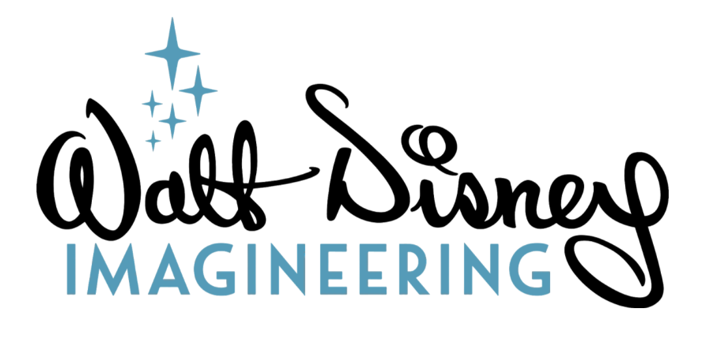

Arpitha Vinod arpithav@teenhacksli.com
How hard is it to maintain direct eye contact with the person you are speaking to? Eventually it gets uncomfortable and you either try to glance somewhere else for a bit, then go back to their face, then look at the bug on the floor, then their left eye, then their right eye….ugh how much longer until this convo ends? Luckily, Disney’s new robot in the making understands your social awkwardness and instead maintains a realistic and interactive robot gaze .
Disney Research , researchers at Imagineering , as well as researchers from the University of Illinois and the California Institute of Technology came together to create a skinless robot that can respond and interact respond and interact with a human standing in front of it, following social and environmental cues . The robot, although slightly creepy looking, has eyes, eyelids, a nose, and a mouth with teeth and gums. It also has a sensor in its torso, hidden by a shirt, which alerts the robot when a human is approaching it.
The robot can imitate human facial expressions by blinking, tilting its head, and even moving its body up and down to mimic breathing. The most important feature, however, is the robot’s ability to gaze at its partner. According to the study, “Given the importance of gaze in social interactions as well its ability to communicate states and shape perceptions, it is apparent that gaze can function as a significant tool for an interactive robot character.” Since no human can maintain consistent eye contact, gazing allows the robot to seem more life-like . Along with gazing, the robot also performs saccades, which is rapid eye movement . You probably haven’t realized it, but all humans subtly do saccades when talking to another person; it is impressive that this almost realistic robot can mimic such a small but integral part of communication.
The famous gaze of this robot has four main states: read, glance, engage, and acknowledge . The read state is the robot’s default state, where its eyes will make it look like the robot is reading a book. Furthermore, the engage state is when the robot is looking at a “person of interest” and tries to catch their attention by moving its eyes and head. The robot switches from state to state based on the “curiosity score” of the stimuli.
So why is Disney of all companies interested in developing a new type of robot? Well, Disney hopes to implement this type of system for animatronic characters in its theme parks. Disney calls the combination of gaze, animation, and show the “illusion of life” and hopes these realistic robots can serve as different Disney characters to realistically communicate with Disney visitors during rides, shows, or while strolling at the theme park. Although now the robot’s face is filled with nuts and bolts and might scare you even more than the roller coaster itself, someday you might be accompanied by this robot that will gaze into your soul on a Disney ride.